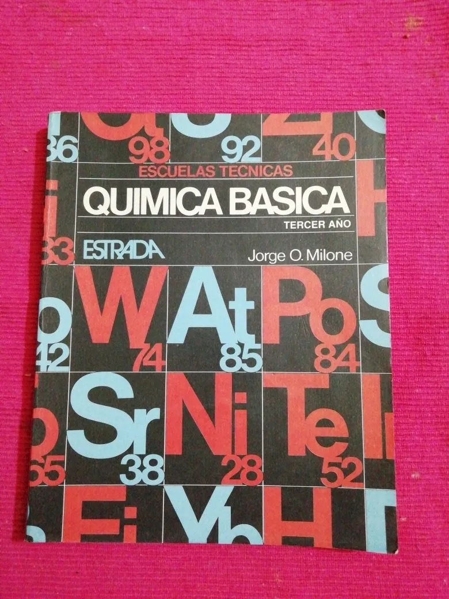

Los otros días me encontré en Mercado Libre con el libro Química General de Jorge Milone.

Y junto a la tapa el recuerdo: ¡este fué mi primer libro de programación!.
Corría el año 1996, tenía 14 años y estaba en tercero de liceo (ver sobre el sistema educativo uruguayo). Recuerdo haber ido a la librería a buscar el libro del curso y leyendo los contenidos me pareció superior el de Milone, así que me terminé comprando este.
De yapa en el libro de Milone se encontraban listados en BASIC al final de algunas secciones. Recuerdo particularmente uno en que se ingresaba el símbolo de un elemento químico y había que escribir el nombre y viceversa.
Despues de eso fué pasar unos buenos meses intentando hacer algo que fuera visualmente atractivo con los comandos draw y play en qbasic.
Así que rememorando mis primeros pasos en la informática e intentando recordar correctamente el órden:
-
Pascal con Turbo Pascal 5.5 (vía libro)
-
MS DOS 6.0 (vía libro)
-
Windows 3.1 (vía libro)
-
C con Turbo C (vía libro de ¿Herbert Schildt? - lo recuerdo porque el libro utilizaba K&R C). El Turbo C me lo pasó mi amigo Agustín, junto al primer virus de computadora que sufrí en mi vida.
Debo agradecerle a ese virus que le pedí a mi vecino (que luego se convertiría en mi mentor en el área de la informática) José Castroman si no tenía un libro de informática sobre virus de computadoras. Al otro día se apareció con dos bolsas negras repletas de libros de informática y me dijo: te los regalo, yo no los voy a usar más.
-
El entorno de programación UNIX y Procesamiento de Datos en UNIX de R.S. Tare. ¡Y aquí me enamoré de UNIX!, o por decirlo de una manera menos romántica, se me metió en la cabeza que quería usar ese sistema. Ya lo contaré en otro momento, pero tuve que esperar unos siete años para tener un PC propio en el que pude instalar mi primer linux.
-
Ashton-Tate DBase III+ (vía libro)
-
Clipper (vía libro)
-
Informix SQL (vía libro)
{kind=link}
De mis primeras lecturas las únicas que tuve que esperar años para poder probar fueron UNIX, que llegó en forma de Debian (aunque mi primer cd de prueba en el 2000 que le hice instalar a Agustín en su PC fué un SUSE), e Informix SQL, que llegó en la forma de PostgreSQL unos cuantos años luego de Debian.
También tuve unos años jugando a embeber ensamblador en Pascal o C (int 13h +
algoritmo de Bresenham) para hacer gráficos. Algo que hoy con SDL (1.2) o
con OpenGL se logra en dos patadas.
Así que de todo lo anterior rescato: Pacal, C, UNIX y haber podido leer siempre un manual o libro del sistema/lenguaje/producto utilizado.
Que viaje a partir de unos ejemplos en BASIC.